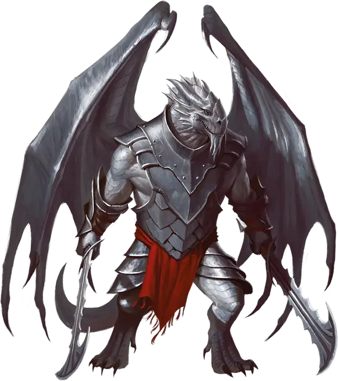

Драконид сивак
Sivak Draconian
Большой Монстр, законно-злой

Класс Доспеха 16 (природный доспех)
Хиты 57 (6к10 + 24)
Скорость 30 футов, летая 60 футов
| мод | спас | ||
|---|---|---|---|
| СИЛ | 18 | +4 | +6 |
| ЛОВ | 10 | +0 | +0 |
| ТЕЛ | 18 | +4 | +4 |
| мод | спас | ||
|---|---|---|---|
| ИНТ | 13 | +1 | +1 |
| МДР | 10 | +0 | +2 |
| ХАР | 10 | +0 | +0 |
Чувства тёмное зрение 60 футов, пассивное Восприятие 10
Языки Общий, Драконий
Опасность 4 (1100 опыта)
Бонус мастерства +2
Особенности
Предсмертная агония. Когда хиты драконида опускаются до 0 существом Большого размера или меньше, драконид рассыпается в пыль, которая затем собирается в кричащий призрачный образ убившего его существа. Образ существует 1 минуту. Все существа, враждебные дракониду, в пределах 10 футов от образа должны преуспеть в спасброске Мудрости Сл 14, иначе становятся испуганными призрачным образом на 1 минуту. Испуганное существо может повторять спасбросок в конце каждого своего хода, оканчивая эффект на себе при успехе.
Действия
Мультиатака. Драконид совершает две атаки Зазубренным мечом и одну атаку Хвостом.
Зазубренный меч. . Рукопашная атака оружием: +6 к попаданию, досягаемость 5 фт, одна цель. Попадание: 13 (2к8 + 4) рубящего урона.
Хвост. . Рукопашная атака оружием: +6 к попаданию, досягаемость 5 фт., одна цель. Попадание: 8 (1к8 + 4) дробящего урона. Если цель — существо Большого размера или меньше, оно должно преуспеть в спасброске Силы Сл 14, иначе упадёт ничком.
Реакции
Похититель облика. После убийства гуманоида Среднего размера или меньше драконид магическим образом окутывает себя иллюзией, которая выглядит и ощущается этим существом, сохраняя при этом игровую статистику драконида, кроме его размера. Эта превращение длится, пока драконид не умрет или не окончит его бонусным действием.
Описание
Дракониды сиваки — зловещие чудовища, созданные из яиц серебрянных драконов. Они кружат на могучих крыльях над полями сражений и ожесточенных битв, и являются эффективными ударными отрядами. Сиваки могут магическим образом изменить свои черты, чтобы скопировать облик убитых ими существ. Благодаря этому эти коварные солдаты могут посеять смятение и отчаяние в рядах своих врагов. Когда сиваки погибают, их распадающиеся тела принимают облик убийц и кричат в агонии.
Дракониды
Дракониды — двуногие чудовища, рождённые из яиц металлических драконов, которые были испорчены сочетанием порочной алхимии и нечистой магии Королевы драконов. Драконьи армии тщательно оберегают секрет создания драконидов, заставляя металлических драконов Кринна думать, что их яйца находятся в заложниках. По этой причине те не препятствуют завоеваниям Королевы драконов.